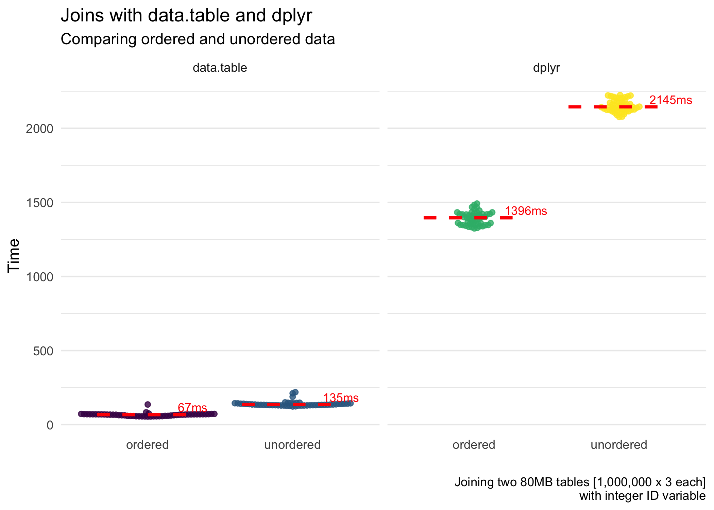
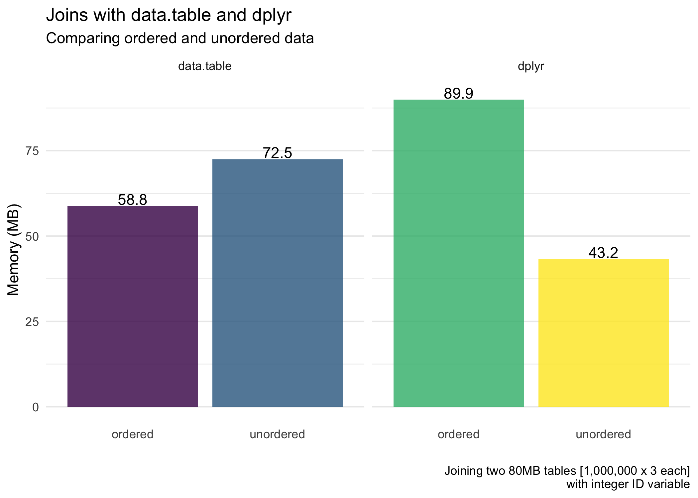
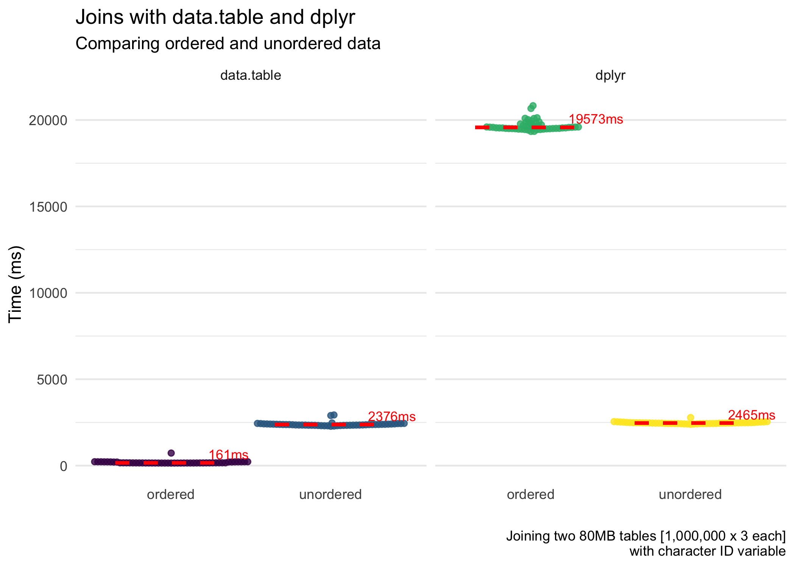
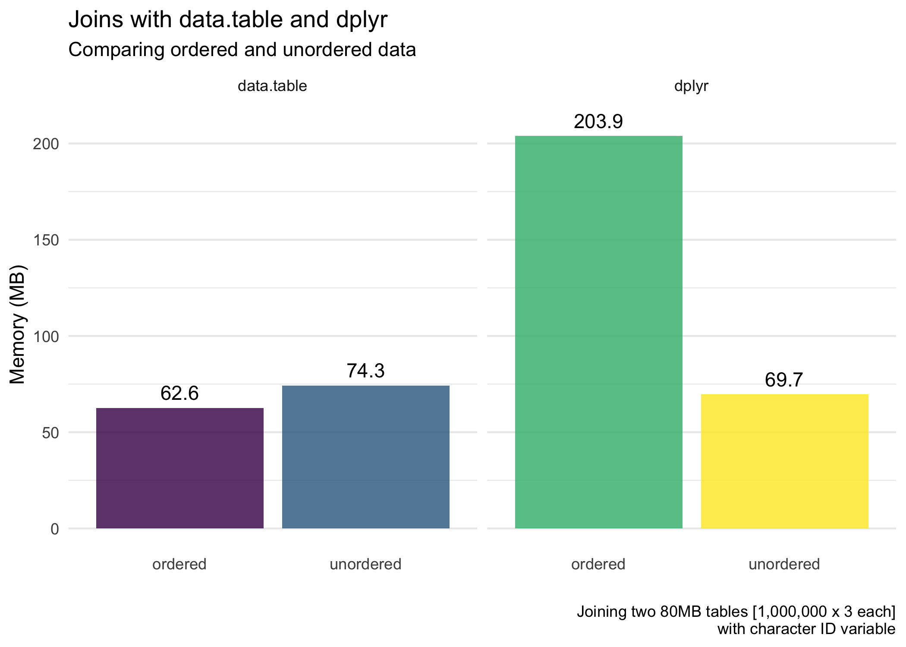

Data Joins: Speed and Efficiency of dplyr and data.table
dplyr and data.table. There are a lot of moving parts when assessing these things, so the results here are just for this situation. It may differ in others. However, the results here…
This short post is looking at data joins for both dplyr and data.table. There are a lot of moving parts when assessing these things, so the results here are just for this situation. It may differ in others. However, the results here are quite instructive.
As I’ve mentioned before:
I want to emphasize that this post is not to say one approach is better than another. My opinion is use what works for you. Ultimately, this is why I am trying to understand the basic behavior of
data.tableanddplyrto do basic data manipulation—to understand when different tools are going to be more useful to me.
TL;DR
Ordering (aka arranging, sorting) is very important in speeding up and increasing efficiency of a data join. This is particularly poignant in data.table which provides a very distinct form of ordering. Herein, I benchmark the performance of joining (unordered data) and ordering + joining data for both data.table and dplyr. The results of the benchmarks show:
data.tablejoins data extremely quickly, especially when the key is numeric. It joins even faster when we join (including the time it took to order the data). This is close to magic. When the key is character, it is still good but far slower than with a numeric key.- Ordering data can be expensive.
data.tabledoes a great job of this, and so it reaps the rewards.dplyr, although it does benefit from ordered data (not shown in this post but figures are shown on Twitter), loses a lot of time ordering the data. So overall, ordering + joining takes more time than simply just joining (for character ID vectors).dplyr, with numeric ID vectors, is faster (but less efficient) with ordering + joining. Fordata.table(like magic), ordering + joining is faster and more efficient for both character and numeric ID vectors. - Memory usage is roughly the same for
dplyranddata.tableoverall (except for when we are also ordering the data withdplyr).
Background
I’ve been interested in understand the inner workings of dplyr and data.table for some time. This is partly just for my personal benefit and learning but also to see in which situations one may work better than the other. My interest was further advanced by some posts I saw regarding the effect of ordering data before doing data wrangling.
One of the posts that spurred this interest was by Brodie Gaslam. He mentioned his fantastic post in this tweet:
Might be of interest:https://t.co/mVRsyMk9aK
— BrodieG (@BrodieGaslam) October 12, 2019
The analyses presented herein attempt to show when ordering can help in joins with dplyr and with data.table, and when it isn’t so beneficial.
Packages
First, we’ll use the following packages to further understand data.table and dplyr joins.
library(tidyverse)
library(data.table)
library(bench)Note that on my machine, data.table by default uses 4 threads. You can see this by using:
getDTthreads()## 4And don’t forget to set a random number seed so our random number work can be replicated.
set.seed(84322)Benchmarking Unordered and Ordered Data
In the benchmarking, I will assess both speed and efficiency (or memory use). This is based on 50 iteractions for each approach in each condition. Below, we look at when the ID (“key”) is a numeric vector and when it is a character vector.
Numeric ID
We’ll use the following tibble for the dplyr joins where it has a randomly ordered (“unordered”) numeric ID variable. Both d1 and d2 are about 80MB.
# Not ordered
d1 <- tibble(id = sample(1L:1e6L),
x = rnorm(1e6),
y = runif(1e6))
d2 <- tibble(id = sample(1L:1e6L),
a = rnorm(1e6),
b = runif(1e6))Below, we benchmark both the regular join—b0 with unordered data—and benchmark both the ordering and the joining—b1.
b0 <- bench::mark(full_join(d1, d2, by = "id"), iterations = 50)
b1 <- bench::mark({
d1 = arrange(d1, id)
d2 = arrange(d2, id)
full_join(d1, d2, by = "id")
},
iterations = 50)Next, we create the data tables used for the benchmarking with data.table.
dt1 <- data.table(id = sample(1L:1e6L),
x = rnorm(1e6),
y = runif(1e6))
dt2 <- data.table(id = sample(1L:1e6L),
a = rnorm(1e6),
b = runif(1e6))Below, I benchmark both the regular join—b2 with unordered data—and benchmark both the ordering and the joining—b3.
b2 <- bench::mark(dt1[dt2, on = "id"], iterations = 50)
b3 <- bench::mark({
setkey(dt1, "id")
setkey(dt2, "id")
dt1[dt2, on = "id"]
},
iterations = 50)The figures below highlight the results of the benchmarking. First, for the speed of the joins.

Next, for the average memory usage (allocated) of the joins.

Character ID
We’ll use the following tibble for the dplyr joins where it has a randomly ordered (“unordered”) character ID variable. Again, both d1 and d2 are about 80MB.
# Not ordered
d1 <- tibble(id = as.character(sample(1:1e6)),
x = rnorm(1e6),
y = runif(1e6))
d2 <- tibble(id = as.character(sample(1:1e6)),
a = rnorm(1e6),
b = runif(1e6))Below, we benchmark both the regular join—b0 with unordered data—and benchmark both the ordering and the joining—b1.
b0 <- bench::mark(full_join(d1, d2, by = "id"), iterations = 50)
b1 <- bench::mark({
d1 = arrange(d1, id)
d2 = arrange(d2, id)
full_join(d1, d2, by = "id")
},
iterations = 50)Next, we create the data tables used for the benchmarking with data.table.
dt1 <- data.table(id = as.character(sample(1:1e6)),
x = rnorm(1e6),
y = runif(1e6))
dt2 <- data.table(id = as.character(sample(1:1e6)),
a = rnorm(1e6),
b = runif(1e6))Below, I benchmark both the regular join—b2 with unordered data—and benchmark both the ordering and the joining—b3.
b2 <- bench::mark(dt1[dt2, on = "id"], iterations = 50)
b3 <- bench::mark({
setkey(dt1, "id")
setkey(dt2, "id")
dt1[dt2, on = "id"]
},
iterations = 50)The figures below highlight the results of the benchmarking. First, for the speed of the joins.

Next, for the average memory usage (allocated) of the joins.

Conclusions
Results here are more straightforward than my previous post looking at the behavior of dplyr and data.table when adding a variable, filtering rows, and summarizing data by group. I am still investigating some aspects of that post. In the meantime, I thought it would be worthwhile to look at joining moderately-sized data in conditions where I join the data as unordered or when we order it then join.
Three main takeaways from my perspective:
data.tablejoins data extremely quickly, especially when the key is numeric. It joins even faster when we join (including the time it took to order the data). This is close to magic. When the key is character, it is still good but far slower than with a numeric key.- Ordering data can be expensive.
data.tabledoes a great job of this, and so it reaps the rewards.dplyr, although it does benefit from ordered data (not shown in this post but figures are shown on Twitter), loses a lot of time ordering the data. So overall, ordering + joining takes more time than simply just joining. This is not the case fordata.table, where ordering + joining is faster. - Memory usage is roughly the same for
dplyranddata.tableoverall (except for when we are also ordering the data withdplyr).
For those that enjoy dplyr syntax (like myself), we can find similar speed improvements using the dtplyr package (see this post for more information on these performance improvements).
Until next time!
Session Information
Note the package information for these analyses.
sessioninfo::session_info()## ─ Session info ──────────────────────────────────────────────────────────
## setting value
## version R version 3.6.1 (2019-07-05)
## os macOS Mojave 10.14.6
## system x86_64, darwin15.6.0
## ui X11
## language (EN)
## collate en_US.UTF-8
## ctype en_US.UTF-8
## tz America/Denver
## date 2019-10-10
##
## ─ Packages ──────────────────────────────────────────────────────────────
## package * version date lib source
## assertthat 0.2.1 2019-03-21 [1] CRAN (R 3.6.0)
## backports 1.1.5 2019-10-02 [1] CRAN (R 3.6.0)
## beeswarm 0.2.3 2016-04-25 [1] CRAN (R 3.6.0)
## bench * 1.0.4 2019-09-06 [1] CRAN (R 3.6.0)
## cli 1.1.0 2019-03-19 [1] CRAN (R 3.6.0)
## colorspace 1.4-1 2019-03-18 [1] CRAN (R 3.6.0)
## cowplot * 1.0.0 2019-07-11 [1] CRAN (R 3.6.0)
## crayon 1.3.4 2017-09-16 [1] CRAN (R 3.6.0)
## data.table * 1.12.4 2019-10-03 [1] CRAN (R 3.6.1)
## digest 0.6.21 2019-09-20 [1] CRAN (R 3.6.0)
## dplyr * 0.8.3 2019-07-04 [1] CRAN (R 3.6.0)
## ellipsis 0.3.0 2019-09-20 [1] CRAN (R 3.6.0)
## evaluate 0.14 2019-05-28 [1] CRAN (R 3.6.0)
## ggbeeswarm 0.6.0 2017-08-07 [1] CRAN (R 3.6.0)
## ggplot2 * 3.2.1 2019-08-10 [1] CRAN (R 3.6.0)
## glue 1.3.1 2019-03-12 [1] CRAN (R 3.6.0)
## gtable 0.3.0 2019-03-25 [1] CRAN (R 3.6.0)
## htmltools 0.4.0 2019-10-04 [1] CRAN (R 3.6.0)
## knitr 1.25 2019-09-18 [1] CRAN (R 3.6.0)
## labeling 0.3 2014-08-23 [1] CRAN (R 3.6.0)
## lazyeval 0.2.2 2019-03-15 [1] CRAN (R 3.6.0)
## lifecycle 0.1.0 2019-08-01 [1] CRAN (R 3.6.0)
## magrittr 1.5 2014-11-22 [1] CRAN (R 3.6.0)
## munsell 0.5.0 2018-06-12 [1] CRAN (R 3.6.0)
## pillar 1.4.2 2019-06-29 [1] CRAN (R 3.6.0)
## pkgconfig 2.0.3 2019-09-22 [1] CRAN (R 3.6.0)
## profmem 0.5.0 2018-01-30 [1] CRAN (R 3.6.0)
## purrr 0.3.2 2019-03-15 [1] CRAN (R 3.6.0)
## R6 2.4.0 2019-02-14 [1] CRAN (R 3.6.0)
## Rcpp 1.0.2 2019-07-25 [1] CRAN (R 3.6.0)
## rlang 0.4.0 2019-06-25 [1] CRAN (R 3.6.0)
## rmarkdown 1.16 2019-10-01 [1] CRAN (R 3.6.0)
## scales 1.0.0 2018-08-09 [1] CRAN (R 3.6.0)
## sessioninfo 1.1.1 2018-11-05 [1] CRAN (R 3.6.0)
## stringi 1.4.3 2019-03-12 [1] CRAN (R 3.6.0)
## stringr 1.4.0 2019-02-10 [1] CRAN (R 3.6.0)
## tibble 2.1.3 2019-06-06 [1] CRAN (R 3.6.0)
## tidyr 1.0.0 2019-09-11 [1] CRAN (R 3.6.0)
## tidyselect 0.2.5 2018-10-11 [1] CRAN (R 3.6.0)
## vctrs 0.2.0 2019-07-05 [1] CRAN (R 3.6.0)
## vipor 0.4.5 2017-03-22 [1] CRAN (R 3.6.0)
## viridisLite 0.3.0 2018-02-01 [1] CRAN (R 3.6.0)
## withr 2.1.2 2018-03-15 [1] CRAN (R 3.6.0)
## xfun 0.10 2019-10-01 [1] CRAN (R 3.6.0)
## yaml 2.2.0 2018-07-25 [1] CRAN (R 3.6.0)
## zeallot 0.1.0 2018-01-28 [1] CRAN (R 3.6.0)
##
## [1] /Library/Frameworks/R.framework/Versions/3.6/Resources/library